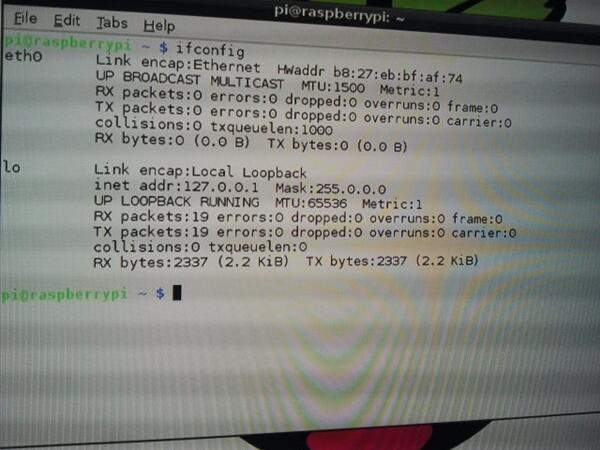

- Módulo: Fundamentos de Hardware
- Título del trabajo RapsBerry
- Componentes del grupo: Carlos Santos Carballo
- Curso Académico: 2013/2014
- Fecha de entrega: 16 de Junio de 2014
Como primer paso es necesario realizar un formateo sobre la tarjeta SD para dejarla "limpia". Para ello utilizamos el programa "SDFormatter". A continuación,tenemos que montar la imagen de nuestro SO previamente descargado en nuestra tarjeta SD, "Win32DiskImager" es una buena herramienta para llevar a cabo esta función.
cuando la tarjeta SD esté ya configurada,la instroducimos en la RaspBerry y la conectamos correctamente. Realizamos una configuración rápida del SO y ya la tenemos lista para un uso básico.
